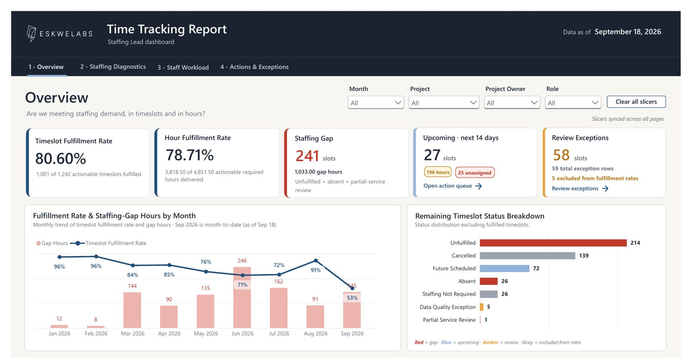

Fewer false alarms in a daily invoice check
At P&G, the Asia Pre-QA report kept flagging invoices that were fine. I traced the recurring flags to outdated validation logic in a KNIME workflow and rewrote it.
−87.5%daily false-positive rate
I'm Emmanuel Villones, an analyst with a BS in Mathematics (cum laude) and nearly two years in finance and risk operations at Procter & Gamble and Kambi. I work in SQL, Python, Excel, Power BI and Looker.
Three problems I measured, traced to the cause, and fixed.
At P&G, the Asia Pre-QA report kept flagging invoices that were fine. I traced the recurring flags to outdated validation logic in a KNIME workflow and rewrote it.
−87.5%daily false-positive rate
At Kambi, I analyzed historical JIRA tickets in Excel to find which Customer Service escalations didn't need Risk, then wrote and presented a response guide.
−67%unnecessary escalations
At Kambi, I managed 180+ recurring financial and risk reports in Looker and set up Power Automate workflows so the reports reached more client accounts.
180+recurring reports across 30 clients
The first two charts are indexed to 100 at the starting point, because the underlying figures belong to the companies involved.
End-to-end work: from raw data to a dashboard or a finding someone can act on.
Built a complete time tracking solution: Python to process the raw data, PostgreSQL to store it, Google Apps Script to automate reporting, and a Power BI dashboard that answers one question for staffing leads: are we meeting staffing demand?
The dashboard tracks timeslot and hour fulfillment rates, ranks projects and roles by staffing gap, shows each staff member's workload, and lists unassigned upcoming slots and data-quality exceptions to act on.

Jul – Sep 2026
Eskwelabs
Mar – Jul 2026
Procter & Gamble Philippines
Nov 2024 – Feb 2026
Kambi Philippines
SQL, Python, Excel, Google Sheets, Power BI, Looker
PostgreSQL, KNIME, Power Automate, Google Apps Script
SAP, JIRA and JQL, PowerPoint, Google Slides
Root cause analysis, data validation and QA, process improvement, presenting findings to non-technical teams
Batangas State University, The National Engineering University, 2024. GWA 1.33.